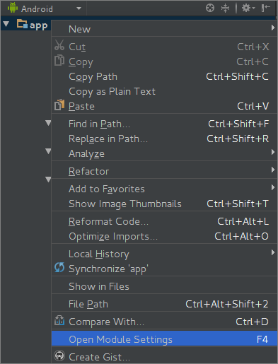
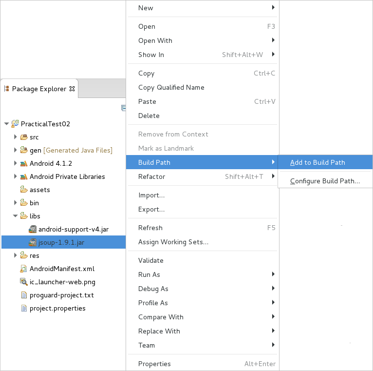
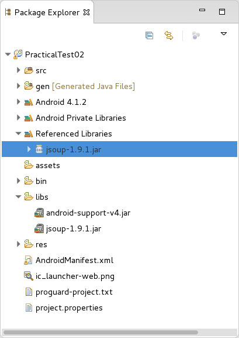
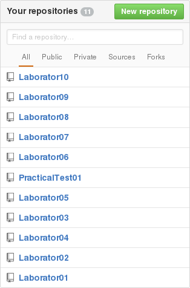
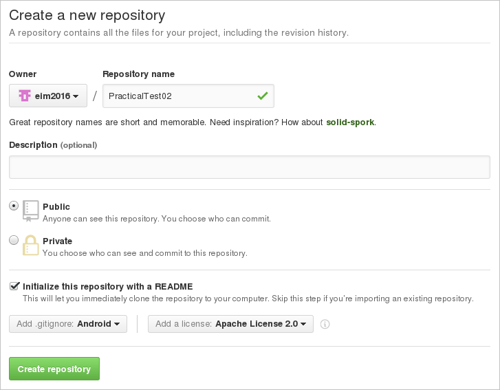

Colocviu 2
Model de Subiect
Observații Generale
Pentru rezolvarea subiectelor propuse în cadrul colocviului 2, sunt necesare:
- un cont Github personal, pe care să existe drepturi de citire și de scriere;
- SDK-ul de Android (cu o imagine pentru nivelul de API 16 - Jelly Bean 4.1);
- mediul de dezvoltare integrat Android Studio sau Eclipse, împreună cu plugin-ul Android Developer Tools;
- un dispozitiv mobil:
- fizic (bring your own device);
- virtual: Genymotion, AVD.
În situația în care este necesară procesarea codului sursă (în format HTML) al paginii Internet furnizat ca răspuns la cererea transmisă către un serviciu web, se poate folosi biblioteca Jsoup.
Integrarea sa în mediul integrat pentru dezvoltare Android Studio 1.5.1 se face prin plasarea fișierului corespunzător în directorul libs al proiectului. Ulterior, din meniul contextual al aplicației Android (accesibil prin click dreapta) se accesează opțiunea Open Module Settings sau se apasă tasta F4.

În fereastra Project Structure se apasă tasta + pentru a se specifica un modul nou.

În fereastra Create New Module se indică tipul de modul Import .JAR/.AAR Package.

Se precizează:
- locația la care se găsește biblioteca ce va fi importată sub formă de modul;
- denumirea subproiectului din care va face parte modulul;

După ce biblioteca a fost integrată în cadrul mediului integrat pentru dezvoltare Android Studio 1.5.1, aceasta va putea fi vizualizată în fereastra Project Structure.

Integrarea sa în mediul integrat pentru dezvoltare Eclipse Mars 1 (4.5.1) se face prin plasarea fișierului corespunzător în directorul libs al proiectului. Acesta devine vizibil în momentul în care se accesează operația Refresh din meniul contextual, disponibilă și prin tasta F5. Ulterior, pentru a fi inclus în classpath, este necesar ca din meniul contextual asociat fișierului jsoup-1.9.1.jar (disponibil pe butonul drept al mouse-ului) să se acceseze Build Path → Add to Build Path.

După ce biblioteca a fost integrată în cadrul mediului integrat pentru dezvoltare Eclipse Mars 1 (4.5.1), aceasta va putea fi vizualizată în secțiunea Referenced Libraries din proiectul corespunzător.

În situația în care este necesară procesarea unui document JSON furnizat ca răspuns la cererea transmisă către un serviciu web, se vor utiliza clasele JSONObject, respectiv JSONArray, din cadrul SDK-ului Android. Pentru vizualizare, se poate folosi utilitarul JSON Formatter & Validator, prin care structura documentului JSON poate fi inspectată cu ușurință.
Rezolvări
Proiectele Android Studio și Eclipse corespunzătoare aplicației Android ce conține rezolvările complete ale cerințelor colocviului sunt disponibile pe contul de Github al disciplinei.
1. Se accesează Github și se realizează autentificarea în contul personal, prin intermediul butonului Sign in.

Se creează o zonă de lucru corespunzătoare unui proiect prin intermediului butonului New Repository.

Configurarea depozitului la distanță presupune specificarea:
- unei denumiri;
- unei descrieri (opțional);
- tipului de director (public sau privat - doar contra cost!!!);
- modului de inițializare:
- local, prin
git init; - la distanță, prin
git clone- depozitul la distanță nu trebuie să fie vid, în această situațoe
- unui fișier
README(opțional); - extensiilor ignorate (corespunzătoare limbajului de programare folosit, în cazul de față - Android) - incluse în fișierul
.gitignore; - tipului de licență sub care este publicat codul sursă.

2. Prin intermediul comenzii git clone se poate descărca întregul conținut în directorul curent (de pe discul local), inclusiv istoricul complet al versiunilor anterioare (care poate fi ulterior reconstituit după această copie, în cazul coruperii informațiilor stocate pe serverul la distanță).
student@eim2016:~$ git clone https://www.github.com/perfectstudent/PracticalTest02
3. Se urmăresc indicațiile disponibile în secțiunea Crearea unei aplicații Android în Eclipse Mars 1 (4.5.1), respecti Crearea unei aplicații Android în Android Studio 1.5.1.
4. Pentru implementarea interfeței grafice, se vor defini controalele care asigură interacțiunea cu utilizatorul pentru fiecare dintre componentele aplicației Android:
- serverul
- un câmp text pentru specificarea portului pe care va accepta conexiuni de la clienți;
- un buton pentru lansarea în execuție;
- clientul
- câmpuri text pentru precizarea parametrilor de conexiune la server:
- adresa Internet (se va folosi
localhostsau127.0.0.1); - port;
- elemente grafice pentru indicarea informațiilor solicitate:
- un câmp text pentru oraș;
- o listă populată cu datele meteorologice care se doresc a fi furnizate (temperature, wind_speed, condition, pressure, humidity, all); ca alternativă, se poate folosi tot un câmp text, cu restricția ca valorile introduse să facă parte din mulțimea acceptată;
- un buton pentru trimiterea cererii și primirea răspunsului, condiționată de completarea anterioară a tuturor celorlalte informații.

- activity_practical_test02_main.xml
<LinearLayout xmlns:android="http://schemas.android.com/apk/res/android" xmlns:tools="http://schemas.android.com/tools" android:layout_width="match_parent" android:layout_height="match_parent" android:orientation="vertical" tools:context="ro.pub.cs.systems.eim.practicaltest02.graphicuserinterface.PracticalTest02MainActivity" > <TextView android:layout_width="wrap_content" android:layout_height="wrap_content" android:layout_gravity="center" android:textSize="25sp" android:textStyle="bold" android:text="@string/server" /> <LinearLayout android:layout_width="match_parent" android:layout_height="wrap_content" android:baselineAligned="false"> <ScrollView android:layout_width="0dp" android:layout_height="wrap_content" android:layout_weight="1"> <EditText android:id="@+id/server_port_edit_text" android:layout_width="match_parent" android:layout_height="wrap_content" android:hint="@string/server_port" /> </ScrollView> <ScrollView android:layout_width="0dp" android:layout_height="wrap_content" android:layout_weight="1"> <Button android:id="@+id/connect_button" android:layout_width="wrap_content" android:layout_height="wrap_content" android:layout_gravity="center" android:text="@string/connect" /> </ScrollView> </LinearLayout> <Space android:layout_width="wrap_content" android:layout_height="10dp" /> <TextView android:layout_width="wrap_content" android:layout_height="wrap_content" android:layout_gravity="center" android:textSize="25sp" android:textStyle="bold" android:text="@string/client" /> <LinearLayout android:layout_width="match_parent" android:layout_height="wrap_content" android:baselineAligned="false"> <ScrollView android:layout_width="0dp" android:layout_height="wrap_content" android:layout_weight="1"> <EditText android:id="@+id/client_address_edit_text" android:layout_width="match_parent" android:layout_height="wrap_content" android:hint="@string/client_address" /> </ScrollView> <ScrollView android:layout_width="0dp" android:layout_height="wrap_content" android:layout_weight="1"> <EditText android:id="@+id/client_port_edit_text" android:layout_width="match_parent" android:layout_height="wrap_content" android:hint="@string/client_port" /> </ScrollView> </LinearLayout> <GridLayout android:layout_width="match_parent" android:layout_height="wrap_content" android:rowCount="2" android:columnCount="2"> <EditText android:id="@+id/city_edit_text" android:layout_width="wrap_content" android:layout_height="wrap_content" android:ems="5" android:hint="@string/city" android:layout_row="0" android:layout_column="0" /> <Spinner android:id="@+id/information_type_spinner" android:layout_width="wrap_content" android:layout_height="wrap_content" android:entries="@array/information_types" android:layout_row="1" android:layout_column="0" /> <Button android:id="@+id/get_weather_forecast_button" android:layout_width="100dp" android:layout_height="wrap_content" android:layout_gravity="center" android:text="@string/get_weather_forecast" android:layout_row="0" android:layout_rowSpan="2" android:layout_column="1" /> </GridLayout> <ScrollView android:layout_width="match_parent" android:layout_height="match_parent"> <TextView android:id="@+id/weather_forecast_text_view" android:layout_width="match_parent" android:layout_height="wrap_content" android:singleLine="false" android:maxLines="10" /> </ScrollView> </LinearLayout>
android.permission.INTERNET), specificată explicit în fișierul AndroidManifest.xml:
- AndroidManifest.xml
<manifest ...> <!-- other elements --> <uses-permission android:name="android.permission.INTERNET" /> </manifest>
- firul de execuție al interfeței grafice; un control grafic nu va putea fi modificat decât din contextul acestui fir de execuție (în acest sens, se va utiliza metoda
post()a elementului respectiv pentru interacțiunea cu utilizatorul sau un obiect de tipHandler); - firul de execuție pentru comunicație, necesar astfel încât operațiile care necesită acces la rețea să nu blocheze interacțiunea cu utilizatorul, afectând experiența acestuia; în practică, se vor defini:
- un fir de execuție pentru server (pe care sunt acceptate conexiunile de la clienți);
- câte un fir de execuție pentru fiecare comunicație dintre client și server, astfel încât interacțiunea dintre acestea să nu influențeze reponsivitatea serverului și nici comunicația cu ceilalți clienți.
5. Implementarea serverului presupune:
a) un fir de execuție care gestionează solicitările de conexiune de la clienți:
- se va instanția un obiect de tip
ServerSocketcare va primi ca parametru portul indicat de utilizator:try { serverSocket = new ServerSocket(port); } catch (IOException ioException) { Log.e(Constants.TAG, "An exception has occurred: " + ioException.getMessage()); if (Constants.DEBUG) { ioException.printStackTrace(); } }
- se va gestiona un obiect de tip
Hashmapîn care vor fi reținute informațiile meteorologice cu privire la diferite orașe care au fost interogate anterior, astfel încât acestea să fie furnizate de la nivel local, fără a mai fi necesară conexiunea la distanță (în acest sens trebuie definită și clasa modelWeatherForecastInformationcare să conțină datele meteorologice disponibile - temperatură, viteza vântului, stare generală, presiune, umiditate - implementând pentru fiecare dintre acestea metode de tip getter și setter):data = new HashMap<String, WeatherForecastInformation>();
- atâta vreme cât firul de execuție nu este întrerupt (aplicația Android nu a fost distrusă), sunt acceptate conexiuni de la clienți (prin invocarea metodei
accept()apelată pe obiectul de tipServerSocket, aceasta întorcând un obiect de tipSocket), comunicația dintre acestea fiind tratată pe un fir de execuție dedicat:@Override public void run() { try { while (!Thread.currentThread().isInterrupted()) { Log.i(Constants.TAG, "[SERVER] Waiting for a connection..."); Socket socket = serverSocket.accept(); Log.i(Constants.TAG, "[SERVER] A connection request was received from " + socket.getInetAddress() + ":" + socket.getLocalPort()); CommunicationThread communicationThread = new CommunicationThread(this, socket); communicationThread.start(); } } catch (ClientProtocolException clientProtocolException) { Log.e(Constants.TAG, "An exception has occurred: " + clientProtocolException.getMessage()); if (Constants.DEBUG) { clientProtocolException.printStackTrace(); } } catch (IOException ioException) { Log.e(Constants.TAG, "An exception has occurred: " + ioException.getMessage()); if (Constants.DEBUG) { ioException.printStackTrace(); } } }
De remarcat faptul că pentru un obiect de tip Socket se poate determina:
- adresa Internet, furnizată de metoda
getInetAddress(); - portul, furnizat de metoda
getLocalPort().
Pornirea firului de execuție corespunzător serverului va fi realizată pe metoda de callback a obiectului ascultător pentru evenimentul de tip apăsare a butonului aferent din interfața grafică:
În prealabil, trebuie să se verifice completarea câmpului text care conține portul pe care vor fi acceptate conexiuni de la clienți.
private class ConnectButtonClickListener implements Button.OnClickListener { @Override public void onClick(View view) { String serverPort = serverPortEditText.getText().toString(); if (serverPort == null || serverPort.isEmpty()) { Toast.makeText( getApplicationContext(), "Server port should be filled!", Toast.LENGTH_SHORT ).show(); return; } serverThread = new ServerThread(Integer.parseInt(serverPort)); if (serverThread.getServerSocket() != null) { serverThread.start(); } else { Log.e(Constants.TAG, "[MAIN ACTIVITY] Could not creat server thread!"); } } }
@Override protected void onDestroy() { if (serverThread != null) { serverThread.stopThread(); } super.onDestroy(); }
public void stopThread() { if (serverSocket != null) { interrupt(); try { if (serverSocket != null) { serverSocket.close(); } } catch (IOException ioException) { Log.e(Constants.TAG, "An exception has occurred: " + ioException.getMessage()); if (Constants.DEBUG) { ioException.printStackTrace(); } } } }
b) un fir de execuție care gestionează comunicația dintre client și server:
- se obțin obiectele de tip
BufferedReaderșiPrintWriter(prin apelul metodelor statice din clasaUtilities:getReader()șigetWriter()), prin care se vor realiza operațiile de citire și scriere pe canalul de comunicație; - se obține o referință către obiectul gestionat de server ce reține informațiile meteorologice pentru orașele pentru care au fost realizate interogări anterior;
- se primesc de la client (prin citire de pe canalul de comunicație) parametrii necesari pentru furnizarea informațiilor meteorologice (oraș și tip de date: temperatură, viteza vântului, starea generală, presiune, umiditate, toate);
- în situația în care informațiile meteorologice se găsesc în obiectul gestionat de server, sunt preluate local;
- în situația în care informațiile meteorologice nu se găsesc în obiectul gestionat de server, sunt preluate prin interogarea serviciului Internet, la distanță:
- se realizează o cerere de tip
POSTla adresa Internet http://www.wunderground.com/cgi-bin/findweather/getForecast; parametrul care trebuie precizat estequeryși are valoarea orașului pentru care se dorește să se obțină informațiile; acesta se atașează cererii de tipPOST, folosind codificareaUTF-8; - alternativ, se poate realiza o cerere de tip
GETîn care valoarea parametrului este inclusă în cadrul adresei Internet: https://www.wunderground.com/cgi-bin/findweather/getForecast?query=...); - se obține răspunsul sub forma unui șir de caractere, reprezentând codul sursă al paginii Internet;
- folosind biblioteca Jsoup, se inspectează documentul în format HTML furnizat pentru a determina locația la care sunt disponibile informațiile necesare
<script> wui.asyncCityPage = true; wui.bootstrapped.API = ""; wui.api_data = { "response": { "version": "2.0", "units": "metric", "location": { "name": "Bucuresti", "neighborhood":null, "city": "Bucuresti", "state": null, "state_name":"Romania", "country": "RO", "country_iso3166":null, "country_name":"Romania", "zip":"00000", "magic":"11", "wmo":"15420", "latitude":44.50000000, "longitude":26.12999916, "elevation":91.00000000, "l": "/q/zmw:00000.11.15420" }, "date": { ... }, "current_observation": { "source": "PWS", "station": { ... }, "estimated": null, "date": { ... }, "metar": "AAXX 16161 15420 22997 80502 10201 20109 30072 40180 55008 8807/ 333 55300 0//// 20454", "condition":"Overcast", "temperature": 21.5, "humidity":48, "wind_speed":6.9, ..., "pressure": 1018, ..., } } }; </script>
Se observă faptul că informațiile necesare se regăsesc în cadrul unei etichete de tip
<script> … </script>care conține un obiect denumitwui.api_datexprimat în format JSON. În acest sens, se obține lista tuturor etichetelor de tipscript(se folosește metodagetElementsByTag()), se preia conținutul acestora (prin intermediul metodeidata()din cadrul claseiElement) și se verifică dacă se regăsește șirul de caracterewui.api_dat; - se inspectează documentul în format JSON pentru a obține informațiile necesare: se obțin, succesiv, obiectele atașate ca valori pentru cheile
response→current_observationși ulterior datele meteorologice, regăsite ca valori sub cheiletemperature,wind_speed,condition,pressure,humidity; - se construiește un obiect de tipul
WeatherForecastInformationfolosind informațiile furnizate și se transmite către server pentru ca acesta să fie utilizat ulterior pentru cereri provenite de la alți clienți, vizând același oraș.
public synchronized void setData(String city, WeatherForecastInformation weatherForecastInformation) { this.data.put(city, weatherForecastInformation); } public synchronized HashMap<String, WeatherForecastInformation> getData() { return data; }
- se trimit la client (prin scriere pe canalul de comunicație) informațiile meteorologice solicitate;
- se eliberează resursele corespunzătoare canalului de comunicație.
@Override public void run() { if (socket != null) { try { BufferedReader bufferedReader = Utilities.getReader(socket); PrintWriter printWriter = Utilities.getWriter(socket); if (bufferedReader != null && printWriter != null) { Log.i(Constants.TAG, "[COMMUNICATION THREAD] Waiting for parameters from client (city / information type)!"); String city = bufferedReader.readLine(); String informationType = bufferedReader.readLine(); HashMap<String, WeatherForecastInformation> data = serverThread.getData(); WeatherForecastInformation weatherForecastInformation = null; if (city != null && !city.isEmpty() && informationType != null && !informationType.isEmpty()) { if (data.containsKey(city)) { Log.i(Constants.TAG, "[COMMUNICATION THREAD] Getting the information from the cache..."); weatherForecastInformation = data.get(city); } else { Log.i(Constants.TAG, "[COMMUNICATION THREAD] Getting the information from the webservice..."); HttpClient httpClient = new DefaultHttpClient(); HttpPost httpPost = new HttpPost(Constants.WEB_SERVICE_ADDRESS); List<NameValuePair> params = new ArrayList<NameValuePair>(); params.add(new BasicNameValuePair(Constants.QUERY_ATTRIBUTE, city)); UrlEncodedFormEntity urlEncodedFormEntity = new UrlEncodedFormEntity(params, HTTP.UTF_8); httpPost.setEntity(urlEncodedFormEntity); ResponseHandler<String> responseHandler = new BasicResponseHandler(); String pageSourceCode = httpClient.execute(httpPost, responseHandler); if (pageSourceCode != null) { Document document = Jsoup.parse(pageSourceCode); Element element = document.child(0); Elements scripts = element.getElementsByTag(Constants.SCRIPT_TAG); for (Element script: scripts) { String scriptData = script.data(); if (scriptData.contains(Constants.SEARCH_KEY)) { int position = scriptData.indexOf(Constants.SEARCH_KEY) + Constants.SEARCH_KEY.length(); scriptData = scriptData.substring(position); JSONObject content = new JSONObject(scriptData); JSONObject currentObservation = content.getJSONObject(Constants.CURRENT_OBSERVATION); String temperature = currentObservation.getString(Constants.TEMPERATURE); String windSpeed = currentObservation.getString(Constants.WIND_SPEED); String condition = currentObservation.getString(Constants.CONDITION); String pressure = currentObservation.getString(Constants.PRESSURE); String humidity = currentObservation.getString(Constants.HUMIDITY); weatherForecastInformation = new WeatherForecastInformation( temperature, windSpeed, condition, pressure, humidity ); serverThread.setData(city, weatherForecastInformation); break; } } } else { Log.e(Constants.TAG, "[COMMUNICATION THREAD] Error getting the information from the webservice!"); } } if (weatherForecastInformation != null) { String result = null; if (Constants.ALL.equals(informationType)) { result = weatherForecastInformation.toString(); } else if (Constants.TEMPERATURE.equals(informationType)) { result = weatherForecastInformation.getTemperature(); } else if (Constants.WIND_SPEED.equals(informationType)) { result = weatherForecastInformation.getWindSpeed(); } else if (Constants.CONDITION.equals(informationType)) { result = weatherForecastInformation.getCondition(); } else if (Constants.HUMIDITY.equals(informationType)) { result = weatherForecastInformation.getHumidity(); } else if (Constants.PRESSURE.equals(informationType)) { result = weatherForecastInformation.getPressure(); } else { result = "Wrong information type (all / temperature / wind_speed / condition / humidity / pressure)!"; } printWriter.println(result); printWriter.flush(); } else { Log.e(Constants.TAG, "[COMMUNICATION THREAD] Weather Forecast information is null!"); } } else { Log.e(Constants.TAG, "[COMMUNICATION THREAD] Error receiving parameters from client (city / information type)!"); } } else { Log.e(Constants.TAG, "[COMMUNICATION THREAD] BufferedReader / PrintWriter are null!"); } socket.close(); } catch (IOException ioException) { Log.e(Constants.TAG, "[COMMUNICATION THREAD] An exception has occurred: " + ioException.getMessage()); if (Constants.DEBUG) { ioException.printStackTrace(); } } catch (JSONException jsonException) { Log.e(Constants.TAG, "[COMMUNICATION THREAD] An exception has occurred: " + jsonException.getMessage()); if (Constants.DEBUG) { jsonException.printStackTrace(); } } } else { Log.e(Constants.TAG, "[COMMUNICATION THREAD] Socket is null!"); } }
app al aplicației Android să se precizeze explicit folosirea acesteia (denumirea sa este org.apache.http.legacy).
- build.gradle
... android { compileSdkVersion 23 buildToolsVersion "23.0.2" defaultConfig { applicationId "ro.pub.cs.systems.eim.practicaltest02" minSdkVersion 16 targetSdkVersion 23 versionCode 1 versionName "1.0" } buildTypes { release { minifyEnabled false proguardFiles getDefaultProguardFile('proguard-android.txt'), 'proguard-rules.pro' } } useLibrary 'org.apache.http.legacy' } ...
6. Implementarea clientului presupune un fir de execuție pe care sunt realizate următoarele operații:
- deschiderea unui canal de comunicație folosind parametrii de conexiune la server (adresa Internet, port);
- obținerea unor obiecte de tip
BufferedReaderșiPrintWriter(prin apelul metodelor statice din clasaUtilities:getReader()șigetWriter()), prin care se vor realiza operațiile de citire și scriere pe canalul de comunicație; - trimiterea la server (prin scriere pe canalul de comunicație) parametrii necesari pentru furnizarea informațiilor meteorologice (oraș și tip de date: temperatură, viteza vântului, starea generală, presiune, umiditate, toate);
- primirea de la server (prin citire de pa canalul de comunicație) a liniilor distincte conținând datele meteorologice (cât timp nu se primește EOF, reprezentat printr-o valoare
nulla șirului de caractere furnizat); - vizualizarea datelor meterologice într-un obiect de tip
TextView, din cadrul interfeței grafice; întucât modificarea se face din contextul unui fir de execuție care gestionează comunicația prin rețea, accesul la controlul grafic se face prin intermediul metodeipost()care primește ca parametru un obiect anonim de tipRunnableal cărui conținut va fi rulat în contextul firului de execuție principal al aplicației Android; - închiderea canalului de comunicație.
@Override public void run() { try { socket = new Socket(address, port); if (socket == null) { Log.e(Constants.TAG, "[CLIENT THREAD] Could not create socket!"); return; } BufferedReader bufferedReader = Utilities.getReader(socket); PrintWriter printWriter = Utilities.getWriter(socket); if (bufferedReader != null && printWriter != null) { printWriter.println(city); printWriter.flush(); printWriter.println(informationType); printWriter.flush(); String weatherInformation; while ((weatherInformation = bufferedReader.readLine()) != null) { final String finalizedWeatherInformation = weatherInformation; weatherForecastTextView.post(new Runnable() { @Override public void run() { weatherForecastTextView.append(finalizedWeatherInformation + "\n"); } }); } } else { Log.e(Constants.TAG, "[CLIENT THREAD] BufferedReader / PrintWriter are null!"); } socket.close(); } catch (IOException ioException) { Log.e(Constants.TAG, "[CLIENT THREAD] An exception has occurred: " + ioException.getMessage()); if (Constants.DEBUG) { ioException.printStackTrace(); } } }

Pornirea firului de execuție corespunzător clientului va fi realizată pe metoda de callback a obiectului ascultător pentru evenimentul de tip apăsare a butonului aferent din interfața grafică.
Verificările care trebuie realizate sunt:
- completarea câmpurilor text ce conțin parametrii de conexiune la server (adresă Internet, port);
- existența unui fir de execuție corespunzător serverului care să ruleze la momentul respectiv;
- completarea controalelor grafice ce conțin denumirea orașului și tipul de informație meteorologică ce se dorește a fi solicitată.
private class GetWeatherForecastButtonClickListener implements Button.OnClickListener { @Override public void onClick(View view) { String clientAddress = clientAddressEditText.getText().toString(); String clientPort = clientPortEditText.getText().toString(); if (clientAddress == null || clientAddress.isEmpty() || clientPort == null || clientPort.isEmpty()) { Toast.makeText( getApplicationContext(), "Client connection parameters should be filled!", Toast.LENGTH_SHORT ).show(); return; } if (serverThread == null || !serverThread.isAlive()) { Log.e(Constants.TAG, "[MAIN ACTIVITY] There is no server to connect to!"); return; } String city = cityEditText.getText().toString(); String informationType = informationTypeSpinner.getSelectedItem().toString(); if (city == null || city.isEmpty() || informationType == null || informationType.isEmpty()) { Toast.makeText( getApplicationContext(), "Parameters from client (city / information type) should be filled!", Toast.LENGTH_SHORT ).show(); return; } weatherForecastTextView.setText(Constants.EMPTY_STRING); clientThread = new ClientThread( clientAddress, Integer.parseInt(clientPort), city, informationType, weatherForecastTextView); clientThread.start(); } }
Conexiunea la serverul implementat în cadrul aplicației Android se poate realiza și prin intermediul unei console de pe mașina fizică, folosind utilitarele nc (Linux), respectiv telnet (Windows).
Trebuie determinată adresa Internet la care poate fi accesat dispozitivul mobil:
- dispozitiv fizic: se folosește USB Tethering, iar adresa Internet este indicată de valoarea Default Gateway a rețelei
usb0/rndis0- Linux, respectiv Ethernet pe Windows (se rulează comenzileifconfigpe Linux,ipconfigpe Windows); - dispozitiv virtual:
- Genymotion: adresele Internet sunt alocate de serverul DHCP din cadrul VirtualBox în intervalul
192.168.56.101→192.168.56.254; - AVD: se utilizează redirectarea porturilor.
student@eim2016:~$ nc 192.168.56.101 5000 Bucuresti all temperature: 17.0 wind_speed: 5.0 condition: Clear pressure: 1015 humidity: 68 |
C:\Users\Eim2016> telnet 192.168.56.101 5000 Bucuresti all temperature: 17.0 wind_speed: 5.0 condition: Clear pressure: 1015 humidity: 68 Connection to host lost. |
7. Pentru încărcarea codului în contextul depozitului din cadrul contului Github personal:
- se transferă modificările din zona de lucru în zona de lucru în zona de așteptare prin intermediul comenzii
git add, indicându-se și fișierele respective (pot fi folosite șabloane pentru a desemna mai multe fișiere); - se consemnează modificările din zona de așteptare în directorul Git prin intermediul comenzii
git commit -m, precizându-se și un mesaj sugestiv: - se încarcă modificările la distanță, prin intermediul comenzii
git push, care primește ca parametrii:- sursa (prin eticheta
originse indică depozitul de unde au fost descărcat conținutul); - destinația: ramificația curentă (implicit, aceasta poartă denumirea
master).
student@eim2016:~/PracticalTest02$ git add * student@eim2016:~/PracticalTest02$ git commit -m "finished tasks for PracticalTest02" student@eim2016:~/PracticalTest02$ git push origin master
În cazul în care este necesar, vor fi configurați parametrii necesari operației de consemnare (numele de utilizator și adresa de poștă electronică):
student@eim2016:~/PracticalTest02$ git config --global user.name "Perfect Student" student@eim2016:~/PracticalTest02$ git config --global user.email perfectstudent@cs.pub.ro
8. Înregistrarea unui serviciu în cadrul rețelei locale se face prin intermediul unor obiecte NsdServiceInfo (Android NSD) respectiv ServiceInfo (JmDNS). Acestea sunt transmise ca parametrii ai metodelor registerService() din clasele NsdManager, respectiv JmDNS.
Aceste obiecte sunt caracterizate prin parametrii de conectare la serviciu:
NsdServiceInfo- adresaInternet (metodasetHost()) și port (metodasetPort());ServiceInfo- portul, configurat prin intermediul constructorului.
Se recomandă ca portul să fie furnizat de sistemul de operare, pentru a evita situațiile în care utilizatorul poate specifica un port care este ocupat. În acest sens, se instanțiază un obiect de tip ServerSocket care primește parametrul 0, indicându-se astfel faptul că se dorește utilizarea unui port aleator, care poate fi folosit la momentul respectiv. Ulterior, parametrii de conectare pot fi obținuți folosind metodele specifice ale unui astfel de obiect:
- adresa Internet -
getInetAddress(); - port -
getLocalPort().
ServerSocket serverSocket = new ServerSocket(0); if (serverSocket != null) { InetAddress inetAddress = serverSocket.getInetAddress(); int port = serverSocket.getLocalPort(); }
9. Protocolul SIP pornește de la o presupunere optimistă conform căreia atât sursa cât și destinația se găsesc în cadrul aceluiași sistem autonom, astfel încât nu sunt necesare credențiale pentru autentificare. Din acest model, o cerere de tip REGISTER se transmite inițial de către user agent fără aceste informații. În condițiile în care răspunsul furnizat de registration server este Status: 401 Unauthorized, mesajul este retransmis împreună cu informațiile necesare identificării (SIP Authorization ID, Password). Se poate observa că dimensiunile celor două pachete sunt diferite (mesajul fără credențiale 1095 octeți, mesajul cu credențiale 1249 octeți). În cazul în care informațiile de autentificare sunt valide, răspunsul va fi Status: 200 OK.

10. Harta Google este implementată în SDK-ul Android:
- prin intermediul unei componente grafice de tipul MapView;
- în cadrul unui fragment, de tipul MapFragment.
Referințele către aceste obiecte se obțin în mod obișnuit, prin intermediul metodelor findViewById(), respectiv findFragmentById().
Pe baza controalelor grafice MapView sau MapFragment, se poate obține o instanță a unui obiect GoogleMap, prin intermediul metodelor getMap(), respectiv getMapAsync(). Se recomandă să se folosească metoda asincronă care garantează faptul că obiectul furnizat este nenul. Metoda de callback onMapReady() a clasei ascultător OnMapReadyCallback nu va fi apelată în situația în care serviciul Google Play Services nu este disponibil pe dispozitivul mobil sau obiectul este distrus imediat după ce a fost creat.
if (googleMap == null) { ((MapFragment)getFragmentManager().findFragmentById(R.id.google_map)).getMapAsync(new OnMapReadyCallback() { @Override public void onMapReady(GoogleMap readyGoogleMap) { googleMap = readyGoogleMap; } }); }